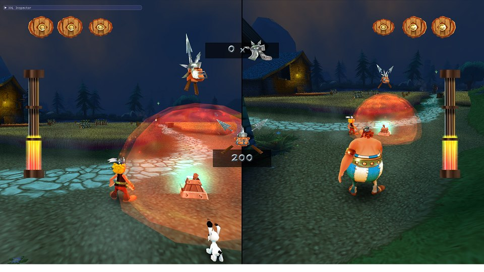
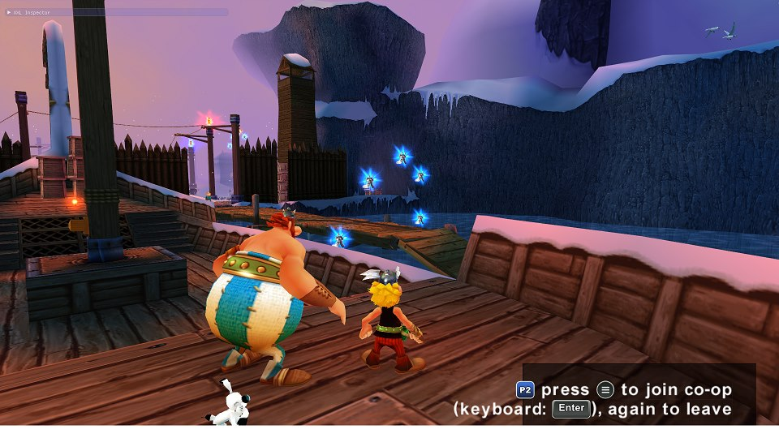
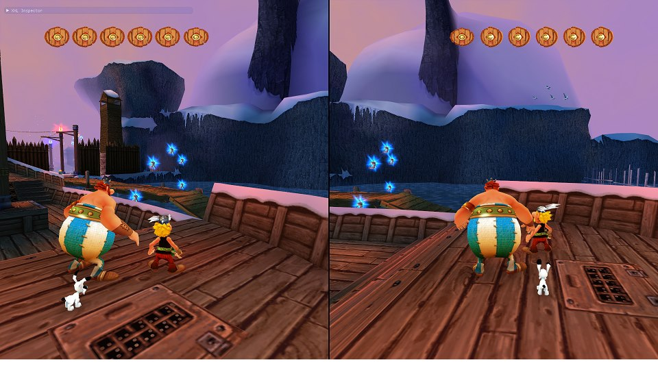
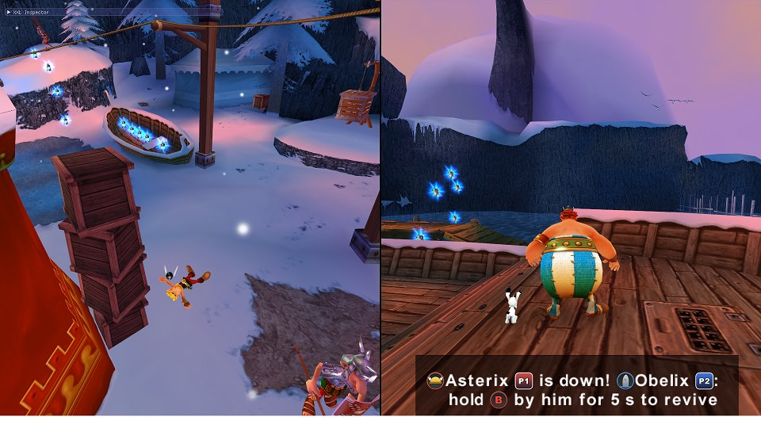
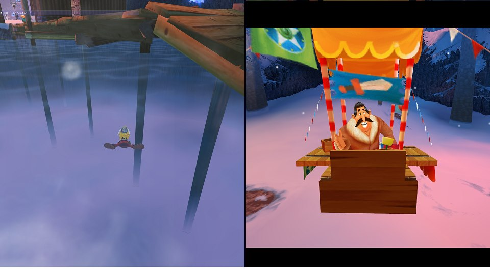
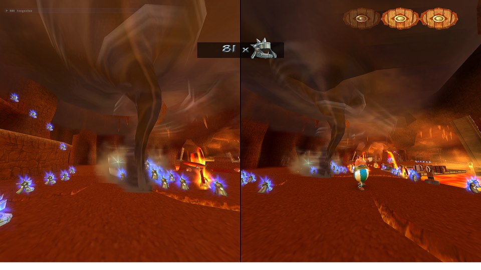
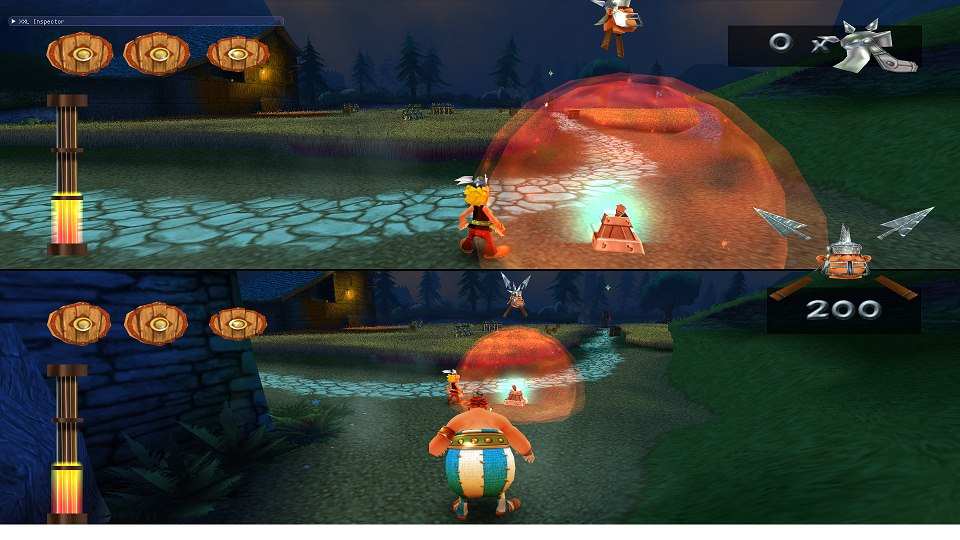
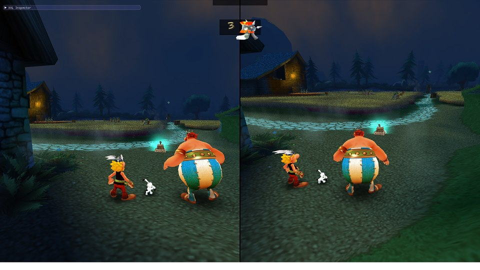

The co-op mod at a glance
xxl_coop.asi turns Asterix & Obelix XXL (2004, PC) into drop-in local co-op: a second player presses Start and plays the hero the first player isn't driving. The game is built for one player, a leader and an AI sidekick, so most of the mod's design is about letting the sidekick be a person without the levels noticing.
What changes for the players
- Drop in, drop out. Start on a second controller (or Enter on the keyboard) joins as Obelix. Start again, or hold Back, leaves.
- Each player keeps their hero. The game's leader switches (blue circles, scripted switches) no longer swap who you control.
- Split screen (side by side or stacked). Each half has its own copy of the game's camera, and player 2 has a HUD of their own.
- Individual heroes. Each hero has its own health, shields and combo bar. A fallen hero is revived by the partner, and it is game over only when both are down.
- The non-leading hero counts. Springs, iron crates, helmets, checkpoints, spies, launchers, Roman squads, the merchant and machines all work for whichever player reaches them.
- Level scripts adapted for two. Waits and walks meant for the AI sidekick are made safe: they can be undone, or skipped entirely in freedom mode.
- Optional harder rules (
[experimental]): more Romans, dearer merchant, combo bar tuning. - Co-op prompts. Hints and button icons name each player's own buttons.

Where things live
- This doc: the design: what the mod does to the game, and the choices behind it.
coop/docs/RESEARCH.md: the how: addresses, classes and one entry per fix round. Rounds quoted here (for example "round 59") point there.git logincoop/: one commit per fix.- xxl_widescreen2d design doc: the separate 2D/HUD widescreen mod.
Design principles
A handful of rules decide most questions. When a new case comes up, check it against these first.
Players keep their heroes. Once player 2 joins, P1 and P2 each drive the same hero until P2 leaves, whatever the game does with its leader. Input is routed per hero, never per leader.
Why: in single player a leader switch hands you the other hero; in co-op that would swap the players' characters mid-fight.
The trio leader is internal. The game still has one leader and one sidekick (the trio, CKGrpTrio). The mod treats "leader" as the game's bookkeeping, not as "player 1". Code that asks for "the leader" is answered with the hero whose turn it is: the leader is time-sliced around each hero's own tick.
Why: about 25 trio questions assume they run on the leader. Slicing makes the non-leader's actions work without rewriting each one.
Levels are built for one player: adapt the level, don't fight the player. Waits, walks to markers and leader switches written for the AI sidekick are let through, held back, or undone. The player is never left softlocked.
Why: a script that parks the sidekick "until the leader does X" can wait forever when the sidekick is a person.
Local co-op only. Network co-op (two game instances) was considered and rejected.
Why: the engine streams one sector and runs one simulation. Two players on one PC fit it; two machines would need the whole world synchronised.
Scripted sections stay the game's. Cutscenes, rides, launcher flights, the belly slide and the boat suspend co-op: one screen, the game drives. Where the game reads input, it is shared between the players (shared modes).
No fix switches. A fix gets no on/off setting. To see the old behaviour, build the commit before the fix.
Why: fix-off/fix-on runs were "a waste of time for us both" (Oct 20). Settings exist only for real gameplay choices.
General game fixes go in their own asi. Fixes that aren't about co-op (the 1 ms timer, widescreen 2D) are separate files, so the game can use them without co-op.
Exception: the LV2-3 powder-keg crash fix stays in xxl_coop.asi, because only the mod sets that crash off (round 124).
Same rules in single player where it's about difficulty. The [experimental] factors change the levels as they load, with or without player 2. The x2 numbers are judged against single player's counts.
Glossary
The game's development names, as the mod and this doc use them.
| Name | What it is |
|---|---|
| Hero | Asterix or Obelix (CKHkAsterix / CKHkObelix). Idefix (Dogmatix) is a third hook that follows them. |
| Trio | CKGrpTrio, the group that owns the heroes and Idefix and decides who leads. |
| Leader | The hero the game treats as player-driven. Most level logic, cameras and objects look at the leader only. |
| Sidekick / companion | The other hero, AI-driven in single player. In co-op it's the other player's hero, still marked "companion" in the trio. |
| Leader switch | Trio events (4800/4801…) that hand the lead to Asterix or Obelix: blue circles, levers, scripts. |
| Life / Life tick | Each hero's per-frame update. It has a player variant and an AI variant. Co-op keeps P2's hero in the player variant and swaps P2's input in for its tick. |
| AI order | The sidekick's current job: follow, wait (order 3), walk or run to a marker, ride a cable car (9 / 12), hang on the rotary beam (8)… |
| Wait / lock | A level script holding the sidekick in place ("wait here") until something happens. The mod calls these locks. |
| Marker | A placed point in the level: where the sidekick walks to, where Romans spawn, where a hero is teleported. |
| Sector | A streamed piece of a level. The engine keeps only one (plus sector 0) live at a time. Sas boxes at the borders switch sectors. |
| Detector / zone | Trigger shapes (boxes, spheres, planes) of CKSrvDetection, each bound to one hero. Crossing one fires an event group. |
| Event group | The list of messages a detector, lever or object sends: leader switches, sidekick orders, cutscenes, sector loads. |
| Blue circle | A pressure plate whose events switch the leader / park the sidekick. |
| Light pillar | CKHkLightPillar: the beam a circle lights. In LV3-6 it shoots Asterix up. |
| Corkscrew | CKHkCorkscrew: a circle that launches or carries its hero. LV2-1's spinning platform (turned by Obelix hitting the turnstile) and LV3-6's pillar launch. |
| Turnstile | CKHkTurnstile: the post Obelix hits with X to turn LV2-1's platform. |
| Rope cable car | A car one hero rides while the other pulls the rope (AI order 9). |
| Telepher | CKHkTelepher: the automatic cable car. It only takes the leader (AI order 12, external control). |
| Lifter | CKHkLifter: a lift that waits until both heroes stand on it. |
| Launcher | Catapults and springs that throw the trio (a "group action"). The game flies the sidekick along. |
| Rotary beam | CKHkRotaryBeam (LV4-2): a beam that catches a hero on its circle and carries it across. |
| Squad | A group of Romans with a box (its fight zone), pools of Romans and a script ("keep N alive", "send in"). |
| Gate | A fight lock: the number of Romans left to defeat before the way opens. |
| Spy / Roman agent | CKHkClueMan: the agent who talks to the leader (dialogues, helmet requirements). |
| Merchant | CKHkAsterixShop: the shop (combos, shields) paid in helmets. |
| Kluster / beacon | How the game streams placed helmets and crates near the camera (beacons in klusters). |
| Checkpoint | Save spots that store progress when the leader passes them (with a jingle). |
| Twister / Fusion | The spin combo. Twister Fusion is both heroes' Twisters merged into one tornado. |
| Shared mode | The mod's name for sections where the game reads one set of controls but both players act: machine gun, boat, belly slide, Fusion. |
| Suspended | The mod's state while the game drives (cutscenes, rides, flights): one screen, P2's hero handed to the AI or the game. |
| LVa-b | Level a, sector b (the user's repro notation, e.g. LV2-1). |
Companion mods and the game folder
xxl_coop.asi is one of several pieces in Game Files. Each piece does one job, and the general game fixes are kept out of the co-op mod on purpose.
| File | What it does | Why separate |
|---|---|---|
dinput8.dll | Ultimate ASI Loader: loads every .asi in the folder. | Third party. The mod is an .asi so it doesn't compete with the QoL patch for d3d9.dll. |
d3d9.dll | XXL QoL patch: windowed mode, wide 3D field of view (enable_wide_fov), mouse and right stick. | Third party. Co-op chains its camera code rather than replace it. |
xxl_coop.asi + .ini | This mod. | |
xxl_widescreen2d.asi | 2D text, HUD models and plates at their true shape on wide screens; a 4x sharper font and redrawn action icons. See its own design doc. | Useful without co-op. Co-op reads whether it is loaded and adapts its hint plate and HUD. |
xxl_timerfix.asi | Asks Windows for a 1 ms timer (timeBeginPeriod(1)). The game's frame limiter sleeps 15 - frame ms, and since Windows 10 2004 those sleeps round up to 15.6 ms unless the process asks: 62 fps drop to about 45. | A general fix (round 93). It's only needed with DSOAL, because IndirectSound's XAudio2 used to ask for the timer on the game's behalf. |
dsound.dll (DSOAL) | Sound wrapper. It replaced IndirectSound after a rare freeze inside IndirectSound/XAudio2. use_dsoal.bat / use_indirectsound.bat switch between them. | Third party. The co-op mod has no sound-driver hooks; it only starts more voices. |
Each general (non-co-op) game fix is its own asi. xxl_coop.asi only holds what co-op needs, plus fixes for crashes that co-op itself sets off.
About this doc
This page explains how to read, edit and keep this doc. It is updated at milestones you call, not after every fix.
Reading
- The sidebar lists pages by group. / jumps to search, which looks through every page.
- Each feature page opens with a meta line: its status, its ini keys, and the rounds/commits to dig into in RESEARCH.md and git.
- Status tags: confirmed on pad awaiting pad test parked decided by Claude. The last one marks a choice made without you; confirm it or change it.
- Blue boxes are design decisions, each with its reason.
Editing
- E (or Edit) makes the open page editable. The toolbar has headings, lists, code, links, decision boxes, status tags, and new / move / delete page.
- Ctrl+S (or Save) writes the doc back to its file. The first time in Edge or Chrome, pick this file (
coop/docs/design/coop-design.html); later saves go there directly. Other browsers download a copy to put over it. - Unsaved edits are kept as a draft in the browser, and offered back the next time the page opens.
- The file stays plain HTML: one
<section class="page">per page. Claude edits it the same way, and git shows the changes.
Keeping it current
The design docs are updated only when you call a milestone ("update the design doc"), not with every fix.
At a milestone Claude reads the git log since the last row of the milestone log, updates the pages, and adds a row.
Joining and leaving
Player 2 joins at any time with Start on the controller the game isn't using, and gets Obelix by default. Leaving is Start again or holding Back for 1.5 s.
Rules
- Which hero:
p2_hero= obelix (default), asterix, or other (the hero the game isn't leading with when P2 joins). Player 1 keeps the remaining hero. - Joining is refused when it would break the game:
- in level 1 before Obelix is found (the hero exists only after the "discover Obelix" cutscene);
- while the merchant is open;
- while a hero is busy (ride, cutscene).
- Leaving is refused mid-ride. Start or Back pressed while co-op is suspended (belly slide, boat) is ignored: leaving mid-slide used to leave both heroes stuck.
- A level change drops player 2. They press Start again in the next level.
- Stats survive a rejoin. P2's health, shields and combo bar are kept across leave and rejoin.
- Join hint. At the level start a hint tells player 2 how to join (keyboard: Enter).

What leaving does
The hero goes back to the game's AI sidekick, the split screen closes and P2's HUD hides. Nothing in the level is reset.
Controllers and keyboard
Player 1 plays exactly as in single player, on whatever the game uses. Player 2 gets any other pad, or the keyboard counted as one more controller.
- P1's pad is detected automatically (
p1_pad = -1). It can be pinned to an XInput slot or "keyboard" if detection ever gets it wrong. - P1's input path is untouched, so the QoL patch's mouse and right-stick options keep working.
- The keyboard is a controller slot for P2. Mixed setups all work:
- P1 pad + P2 keyboard;
- P1 keyboard + P2 pad;
- one keyboard for both, with P2 on the numpad layout given in the ini.
- The user's setup: one pad (P1) and P2 on the keyboard: attack F, grab G, jump Space, dash H, LB Q, RB E, camera WASD, move with the arrows.
- The game's pad layout is kept right. On some boots (the level forced before the title screen) the game picked a keyboard or unset layout; the mod corrects it to the pad layout.
Mod buttons (R3 / Back)
Holding R3 (player 2 can also hold Back or Backspace) turns the face buttons into the mod's own actions. They are rescue tools, not part of normal play.
| Hold R3 + | Does | Needs |
|---|---|---|
| A | Your hero jumps to your partner (lost, stuck, fell behind). | |
| B | Take your hero back from the level. It undoes a wait the level put on it the way a revive would (circle, rope cable car, unfinished platform sequence; the picture of the lock goes back, the hero lands on its last solid ground, the lead goes back). On a scripted walk it just hands the hero back. It also resets a hero that is stuck and can't move. | |
| Y | Fill the magic potion. | cheats |
| X | Make your hero the leader (last resort). | cheats |
| D-pad up / down | Asterix gets the nearest torch, lit / throws it away. | cheats |
| D-pad left | Every combo learned, your own combo bar full. | cheats |
R3 + B is the first step towards "never locked, never softlocked": any wait the level puts on a player's hero can be undone by that player.
The old 2-minute automatic release was removed (round 101): it caused softlocks, and R3 + B made it unnecessary.
Players keep their heroes
In single player the game's leader is "you". In co-op each player owns a hero, and the trio's leader becomes an internal flag that the mod moves around as needed.
How it plays
- A blue circle or scripted switch still changes the game's leader (cameras, objects and scripts follow it), but P1 and P2 keep driving the same heroes.
- Both heroes run their player variant. P2's hero gets P2's input during its own Life tick.
- Hero code that asks "am I the leader?" is answered yes during that hero's own tick. That's how the non-leader can jump, grab, attack, use objects and get the right HUD prompt.
Input is routed per hero, never per leader.
Why: it's the only rule under which a player never loses their character to a script.
Heroes and each other
- The heroes are solid to each other: they push, but don't hop over or climb onto each other. (The sidekick's automatic dodge hop is skipped between two player heroes.)
- A hero walking into the other is treated like the game treats a waiting sidekick: pushed aside, no hop.
The non-leader acts like a leader
Almost everything in a level only answers the leader. In co-op each of these is made to answer whichever player hero reaches it.
| Thing | In single player | In co-op |
|---|---|---|
| Springs / bumpers | Launch the leader only | Launch whoever touches them |
| Iron crates | Break for the leading Obelix | Break for P2's Obelix too |
| Placed helmets | Attracted to the leader; streamed around the leader's camera | Attracted to either hero; streamed for both cameras |
| Crates | Shown in the leader's camera view | Shown in both players' views |
| Pressure plates | Leader on the plate | Either hero. Plates whose events command the trio (blue circles) stay leader-only. |
| Levers | Leader's hit | Either hero, with the safe sequence (below) |
| Checkpoints | Leader in radius | Either hero |
| Spies | Spawn and talk near the leader | Spawn near either hero; the talker takes the lead (see lead handovers) |
| Roman squads | Wake when the leader enters their box | Wake for either hero (see Romans and squads) |
| Fight mode | Fight music and camera around the leader | For each hero in a fight |
| Launchers | Started by the leader | Started by either; the starter leads the flight |
| Lifters | Wait for the sidekick, then teleport it on after a delay | Wait for both players; a player's hero is never teleported onto them |
| Pushed blocks | Pushed by the leader | Ticked with the pusher as leader (LV5-3's big block) |
| Torches | Offered to the leading Asterix | To a player's Asterix. A carried torch burns only while Asterix really leads, as in single player. |
| Idefix (RB) | Bites for the leader in range | Answers either player's RB, from any distance |
| Hero zones | Bound to one hero | Answer either player, with exceptions (see Hero zones) |
Kept leader-only on purpose
- The corkscrew (spinning platform, light pillar launch): only the real leader.
- Blue circles and plates whose events switch the leader or park the sidekick.
Safe sequence
A lever whose event hands the lead to a hero ("switch to Asterix") only works for the player who isn't leading, and only when it would really change the leader. Hit out of turn, such a lever could park a hero forever (LV2: the lever behind the iron crates, then the hearth).
Who takes the lead, and when
Some actions need the actor to be the game's leader for their whole length: the camera, the dialogue walk, the shop. The mod hands the lead over for the action and gives it back afterwards.
| Action by the non-leader | During it | Afterwards |
|---|---|---|
| Spy dialogue | The talker leads; the other hero walks in as the companion, as in single player | Lead given back |
| Merchant | The shopper leads; the other player plays on | Given back when the shop closes |
| Launcher | The starter leads; co-op suspended, the game flies the other along | Given back on landing |
| Machine gun | Asterix uses it alone with co-op on. Obelix's X at the handles joins him (shared mode). | Asterix's A ends it; lead given back |
| Telepher (automatic car) | The rider takes the lead the next frame (the car's end jump follows the real leader) | Stays (it's the level's lead) |
| Death | The hero that lost its last point leads, so the death shows on it | See revive |
Level leader switches
- A leader switch that arrives during a launcher flight waits for the landing (LV4-8).
- Leader switches are held back while a hero shops. In single player the merchant pauses the world, so they never arrived mid-visit.
- With a hero down, zones whose only trio orders are leader switches are let through. The level's switch is kept for after the revive (LV5-10 keg).
Hero abilities in co-op
Single player's moves that involve the sidekick are rebuilt so the other player takes the sidekick's part.
Combos
Player 2 gets the full combo set (the game's combo recognizer runs on P2's input too). Each hero has its own combo bar (see Individual heroes).
Twister and Twister Fusion
- A player's Twister is copied to the other player's hero when it's on the ground and not attacking, the way the AI sidekick copies the leader's.
- A player's Twister isn't pushed back by the Romans it touches.
- Fusion: when both heroes spin near each other, the leader leads and the partner merges in. The screen goes single for the fused tornado. Input is shared: Asterix's player goes forward/back, Obelix's player goes left/right and turns the camera.
LB pass
- A player spinning a grabbed Roman presses LB to throw it to the other player, using the game's own throw-to-the-leader with the receiver as the leader for the flight. The thrower plays the companion's "ready" whistle.
- LB with nothing to pass plays the other hero's "no".
- There's no pass to a fallen partner.
- A hint teaches the pass for the first three spins of a level, until one pass is made.
RB: Idefix
Idefix answers either player's RB from any distance, with the "no" sound when he's busy.
Magic potion on Obelix
The potion also works on a player's Obelix: run speed and invincibility as for Asterix. The triple jump stays Asterix's, because Obelix has no third jump animation.
Single player never gives Obelix the potion. In co-op both players should feel it.
Individual heroes
Each hero has its own health, shields and combo bar, and helmets stay shared. Off, the heroes share single player's health.
- Own: health points, shield count (3-6, bought per hero at the merchant), combo bar and its level.
- Shared: helmets (the currency), the magic potion gauge, level progress.
- Bonuses (health, shields) go to the hero that collected them, and only when they help it.
- Each HUD pops up for its own hero's health changes. Player 2's HUD is a mirrored copy at the right (see HUD layouts).
- Romans and lions leave a fallen hero alone.

Down, revive and the partner block
A hero with no health falls and stays down until the partner revives it. Only when both heroes are down is it game over.
Going down
- A fall into a pit puts the hero down on its last solid ground (the newest safe spot at least 0.7 s old).
- A fall on the belly slide or the boat is game over at once: there's no partner to come over.
- After a game over there's a single respawn for both.
Reviving
- The partner holds grab (B) within 3 units of the fallen hero for 5 seconds; a bar fills on screen. The hero comes back with half its health.
- A sector change revives the fallen hero too (it's brought along).
- A launcher revives the partner.

The partner block
While one hero is down, things that need both heroes stay shut. The standing hero who walks into one is put back on its last solid ground, on the side it came from:
- lifters, the corkscrew, cable cars, blue circles;
- launchers (prompt hidden);
- detector zones whose events command the trio;
- a spy's talk (held without a put-back: the hero walks on, and the talk starts after the revive);
- the belly slide's start;
- LB passes.
Checkpoints are never blocked: progress saves.
A lock in progress is undone when the waiting partner falls. The rope cable car goes back to its start, the light pillars switch back, the spinning platform is re-armed, and the detectors are as before. The level can then be played again from that point.
Leader and revive
- A hero that led when it fell gets the lead back after the revive.
- The level's own leader switch made meanwhile is kept and applied after the revive.
Fallen hero out of reach
A hero can fall where the partner can't walk to: LV2-6's big pit, after the telepher carried one hero over, or LV2-3's hearth room behind a shut door. The mod checks this with the level's own pathfinding graph.
- If the fallen hero led when it fell and can't be walked to, the other hero is brought beside it, onto the fallen hero's own safe spots.
- After the revive the brought hero is sent back where it came from, and the revived hero gets the lead back.
- Put-backs ignore safe spots more than 40 units away.
- The AI companion uses safe spots too. A fallen hero is never made the AI companion while co-op is suspended.
Hero zones (detectors)
Each detector is bound to one hero, so half the level's triggers only answer Asterix and half only Obelix. The mod runs detection a second time with the heroes swapped, so a zone also answers the other player, unless that would break the script.
The rule
A zone answers either player, except zones whose events give the sidekick an order: wait (4802), or walk / run / teleport to a marker. Those keep to their own hero, unless the same group also runs a cutscene.
Why: "sidekick, wait here" must only catch the hero it was written for (LV4-5 blue circle, LV4-9 / LV5-4 boats). Plain leader switches and cutscene zones must fire for whoever gets there (LV2-10 boss gate for P2).
- A cutscene zone set off by one player brings the zone's own hero over when the cutscene starts, if the two are 40+ units apart.
- With a hero down, zones that command the trio are held (the partner block). Zones that only switch the leader are let through.
- Pressure plates follow the same idea: plates whose events command the trio stay with the real leader.
Sectors and catch-up
The engine streams one sector at a time around the leader. Two players can't be in different sectors, so a hero left behind is brought to the other.
- The mod tracks each player hero's own sector through the Sas boxes, as the engine does for the leader.
- A hero whose sector isn't the streamed one, and that is outside the Sas boxes, is teleported to the other player after
sector_catch_up_ms(1 s). - A fallen hero is brought along by a sector change (it counts as a revive).
Waits, locks and undo
Many puzzles park the sidekick ("wait on the circle while the leader turns the platform"). In co-op that parked hero is a player, so every lock needs a way out that doesn't softlock either player.
The locks
| Lock | Where | How it ends in co-op |
|---|---|---|
| Blue circle / light pillar wait | LV2-1, LV2-10, LV3-6… | The level's own sequence; R3 + B; a fall of the partner undoes it |
| Corkscrew (spinning platform) | LV2-1 | Obelix turns the turnstile (X). An unturned sequence (Obelix gone for 3 s after the zone) is set back and Asterix re-locked. |
| Rope cable car | LV2-1, LV3-3 | A car stopped short with its rider freed drives back to its start. After an undo, the hero is kept off the car until it's free for 1 s or the hero walks 4 units. |
| Telepher | LV2-6, LV3-6 | The rider takes the lead and rides to the end |
| Lifter | LV2-LV5 | A lifter waiting for a hero the level has locked undoes that lock after 2 s; while it waits, that hero can't board a rope car |
| Boss button | LV2-10, LV3-6 | Asterix is locked on the button, as the boss needs |
Undo
An undo puts the level back as if the lock had never started:
- the lock's picture is restored (pillars, platform, car);
- the hero stands on its last solid ground;
- the lead goes back to whoever had it before the lock;
- the hero's camera aims at the hero again.
Undos happen on R3 + B, when the partner falls, and on the lifter's 2 s rule. Only wait orders are undone; R3 + B on a scripted walk just hands the hero back.
No timeouts. A hero waits as long as the level says, until a player acts. The 2-minute safety release was removed in round 101.
Freedom mode
In freedom mode the level never takes a player's hero: no "wait here", no walking it to a marker. The player does those steps by hand.
What stays scripted
- Cable cars (rope and telepher) still take the hero.
- Corkscrews (
freedom_corkscrews, default on): LV3-6's light pillar and LV2-1's spinning platform still lock the hero on the circle, so the launch aims the jump. The lock is kept through the ride and ends when the level gives the lead on. - Boss buttons (LV2-10, LV3-6) always lock Asterix on the button.
Done by hand
- Jump off the spinning platform at its top.
- Under the rotary beam (LV4-2), jump: the game then catches the hero and carries it across. The catch comes as soon as the jump does.
Freedom Romans
While the level would have kept a hero waiting, Romans come for that hero now and then: every 6 s, up to 6, from the nearest active squad. This lasts until the other player lifts the wait.
Freedom Romans spawn only at the level's own markers: first a squad spawn marker (within 40 units, out of view, walkable to), then the hero's own walk-to marker if it's out of view. They never spawn at a random pathfinding cell.
Why: random cells put Romans in shallow water, where they drowned. Level markers are where the designers expected Romans.
User-tested in LV4-2 and LV5-5. Not yet tested: LV5-5's marker-behind-a-wall case.
Scripted sections and cutscenes
While the game drives (cutscenes, rides, flights), co-op steps aside. Where the game still reads input, both players share it by role.
Suspended (one screen, the game drives)
- Cutscenes (letterbox bars): P2's hero goes to the AI and the screen goes single. A hero far from the cutscene is regrouped.
- Launcher flights, rope and telepher rides: the game flies or carries the sidekick. While the game holds a player's hero, that player gets the mod's own camera to look around.
- Player 2 can't leave mid-ride.
Shared modes (one set of controls, two players)
| Mode | Asterix's player | Obelix's player |
|---|---|---|
| Belly slide (LV2-2…) | Jump (A) | Steers, and the camera |
| Boat (LV4-9, LV5-4) | Jump (A) | Steers, and the camera |
| Machine gun, joined | Fires, and leaves (A) | Turns it |
| Machine gun, alone | Everything (split screen stays) | Plays on |
| Twister Fusion | Forward / back | Left / right, and the camera |
| Dialogue text | Either player moves the words on | |
A hint names each player's role when a shared mode starts (10 s; 5 s for the fused tornado). During the slide and the boat, the one HUD shows the rider's stats.
Cutscene skipping
With skip_cutscenes, every cutscene ends with Enter, including level 1's long intro, which normally can't be skipped. The user plays with it on.
Bosses
- The boss runs (LV2-10, LV3-6) walk the sidekick ahead by script. In co-op that walk is dropped, and the other player is put on whoever woke the boss.
- The boss's button wait locks Asterix on the button, also in freedom mode, because the fight needs it.
- The LV2-10 boss gate answers either player (see Hero zones).
- The shop closes when the other player starts the boss run.
Romans and squads
In single player a squad wakes when the leader enters its box and spawns reinforcements out of the leader's camera. In co-op both players count.
- Waking: a squad runs for the non-leading player when only that hero is in its box, or when both are and that hero is nearer the box's middle.
- Sharing: a squad whose fight zone holds both heroes shares its Romans between them (LV3-6).
- Kept alive: a squad isn't reset while the other player's view sees its box, and squads around either player aren't freed for other squads' Romans.
- Out of sight: reinforcements and marker spawns never appear in either player's view or next to a hero. A squad run for the non-leader uses that player's camera.
- Always spawns: when every marker is in view, the farthest marker from both heroes is used. Without that, a gate could count Romans that never came and never open.
- Romans leave fallen heroes alone.
Helmets, spies, checkpoints and sound
Helmets and crates
- Placed helmets and crates are streamed for both players' cameras: each camera's nearest get the live slots, interleaved.
- With split screen the per-frame helmet cap is raised.
Spies (Roman agents)
- Spies spawn for the non-leading player too.
- A dialogue set off by the non-leader makes it the leader for the talk, and the other hero walks in as in single player.
- A spy ignores its talk event when both heroes are more than 250 units away. Without that, LV5-9's slide agent restarted its talk 700 units off.
- The camera always comes back after a dialogue.
Checkpoints
Checkpoints save for either player passing them. The sector-8 "music" the user heard was a checkpoint jingle.
Sound
- Sounds near P2 are heard: range checks use the nearer of the two cameras.
- Voices nearer P2's camera are mixed from a listener placed there.
The merchant
Shopping doesn't pause co-op: the shopper's half shows the shop, and the other player plays on in theirs.
- The shopper takes the lead for the visit; it's given back when the shop closes.
- The world keeps running. Single player's world pause for the merchant is skipped.
- The shop HUD is squeezed into the shopper's half (side by side), or laid out sideways at half size (stacked).
- Only the shopper's buttons drive the shop. Its icons are the shopper's, and the pause menu shows P1's.
- The shop closes itself when the other player:
- starts a spy dialogue, a cutscene, a ride or a launcher;
- changes sector;
- opens a save menu;
- starts the boss run.
- Level leader switches wait until the visit ends.
- No joining while a shop is open.

Harder rules ([experimental])
Two players make fights easy, so these factors scale the levels up. They apply as the level loads, in single player too, and take effect after a restart.
| Key | Shipped | User's ini | Effect |
|---|---|---|---|
squad_romans_at_once | 2 | 2 | Romans alive at once: the level's numbers and the squad's script ("keep N alive", "send in"), as far as the pool has Romans |
squad_romans_to_defeat | 2 | 2 | Each kind of Roman in a squad this many times, so the gate's number doubles |
merchant_prices | 2 | 2 | Merchant prices in helmets |
combo_bar_fill | 0.5 | 1 | How much a hit counts (0.5 = fills half as fast) |
combo_bar_drain | 1.5 | 1 | How fast a bar loses its hits before it is full |
combo_bar_full_drain | 1.5 | 1 | How fast a full bar runs out |
Rules of the scaling
- Left as the level has them:
- squads whose Romans are all placed from the start (hiding Romans, lone guards);
- turtles, the mobile tower, jetpack Romans.
- Back to the level's numbers while a player's hero is held by the level (a cable car ride) or a hero is down.
- Squads sharing one Roman pool in one place keep the level's starting Romans (LV5-6 squad 4).
The x2 factors apply in single player too. Co-op on or off doesn't change them; only a held or fallen hero drops "at once" back to the level's numbers.
Why: "x2 at once" is judged by single player's spawn counts. LV5-6 squad 4: vanilla 4 Romans + 2 leaders at once means x2 should give 8 + 4.

Split screen
With player 2 in, each player gets half the screen and a camera on their own hero. Scripted sections always use one screen.
- vertical (default): P1 left, P2 right. horizontal: P1 on top, P2 below.
split_fovadds field of view to each half, on top of the game's and the QoL patch's (shipped 15, the user's 20).split_screen = off: both players share player 1's camera.

One world step per frame
The world advances once per frame, however many views draw it. In split screen the scene is walked up to three times a frame (P2's stamp walk, P1, P2). Anything a walk advances by frame time is stepped by the first walk only, or kept per view.
- Particles (the x10's rays, the potion aura), snow, animation blends: stepped once.
- The sky's scroll: one state per view (it spun when the two cameras faced each other).
- Shadows: rebuilt for each half's own camera.
- Swept collision spheres: updated by the first walk only.
Cameras
Each player gets their own copy of the game's camera. It zooms with the right stick, pulls back in fights, and the level's fixed and scripted cameras show on the screen of the player who walked into them.
camera = game(default): the game camera copy per player. While the game holds a player's hero (cable car, waiting on the platform), that player gets the mod's own camera to look around.camera = mod: the mod's own follow camera for P2 (the right stick orbits).- A leader switch swaps the two camera states, so each player keeps their own view.
- The fight camera follows each hero in a fight. The mole combo's field of view works in split screen.
- After an undo the hero's camera aims at the hero again (it had followed the cable car).
Camera shake
World shakes (a boss) reach both cameras. A hero's own shake (the Twister) stays on its player's camera.
HUD layouts
Player 2 gets a full HUD of their own: health shields and combo bar. The shared pieces (helmet counter, x3/x10 sign, the spy's helmet requirement, the gate counter) get one place for both.
Side by side (vertical split)
- P1's HUD as the game draws it. P2's is mirrored at the right edge, models and all: shields eaten from their left, the combo bar's word readable.
- The shared pieces sit in the top middle at 3/4 size, under the shield rows:
- the helmet counter, centred by its plate's drawn middle;
- the x3/x10 sign and the spy's requirement, each centred on its own plate, at half the old gap under the counter.
- The gate counter (3/4 size) drops from the top and rises from the bottom in the middle, instead of sliding across P2's half. Its sparkle is moved with it.
- Five or six shields are shrunk to fit each half.
Keep the 3/4 middle pieces and the six-shield shrink, with or without xxl_widescreen2d.asi.
Why: tried full size under the widescreen asi in round 120, and the user's pad test preferred the smaller version as less cluttered (round 121).
The x3/x10 sign and the spy's requirement sit tighter under the helmet counter: the gap is halved, the ratio kept (round 126).
Why: the user wanted tighter, not equal gaps.

Stacked (horizontal split)
- Each player's HUD is drawn single player's way in their own half: P1's as the game's, P2's not mirrored, moved down half a screen.
- Combo columns are 3/4 size. The helmet counter, requirement and x3 sign sit at the right as in single player.
- The gate counter is at the right edge, its middle on the border between the halves.
When the HUDs show
- Each HUD pops up for its own hero. Back on P2's controller shows P2's HUD, as the HUD button does for P1.
- P2's HUD vanishes with the game's for cutscenes and dialogues, and hides behind the pause menu.
- A fallen hero's HUD hides.
- Each combo bar keeps its own level bounce and paleness.
- With one screen (slide, boat) P2's HUD is still drawn on the right.
Hints and button icons
Co-op adds its own hints, and with player 2 in, the game's action icons in texts become each player's real buttons.
Co-op hints
They use the game's own prompt plate at the bottom right, right-aligned, with explicit line breaks. They cover:
- how to join;
- the LB pass;
- shared-mode roles;
- machines that need both heroes in reach;
- a lifter waiting for the other hero (after 4 s);
- the revive bar.
The plate is sized to the hint's lines, and a hint that gets wider while shown stays on screen.
Whose buttons a text shows
| Text | Icons shown |
|---|---|
| A HUD prompt ("Activate") | The buttons of the player whose hero has the prompt; both if both |
| Dialogues | One icon if both players press the same button, else "X/F" |
| The merchant, while a hero shops | The shopper's |
| The pause menu and its pages | Player 1's (game state 2 outranks a shopper) |
| Other menus | Player 1's (only P1 drives menus) |
| Runs of direction icons | One stick glyph |
Player 1's icons are red, player 2's blue. Keys are drawn as keycaps with the key's name.
The icons are PNGs (Game Files\coop_icons, drawn by tools\make_icons.ps1) added to the game font as extra glyphs. A designer's redraw is planned; the export is in icons_export. The font's own action icons, which show where co-op doesn't replace them, are redrawn by xxl_widescreen2d.asi.
Settings (xxl_coop.ini)
Every key, its default as shipped (coop/dist/xxl_coop.ini), and the user's own value where it differs.
| Key | Shipped | User | What it does |
|---|---|---|---|
| [coop] | |||
enabled | on | Master switch; off = loaded but does nothing | |
p1_pad | -1 | P1's controller: auto, a slot 0-3, or keyboard | |
p2_hero | obelix | obelix, asterix, or other | |
safe_sequence | on | Levers that hand the lead only work for the non-leader, when it would change the leader | |
individual_heroes | on | Own health / shields / combo, revive, game over only with both down | |
freedom | off | on | The level never takes a player's hero (cable cars excepted) |
freedom_corkscrews | on | In freedom mode, corkscrew circles still lock their hero | |
obelix_potion | on | The magic potion works on a player's Obelix | |
sector_catch_up_ms | 1000 | Delay before a hero left in an unstreamed sector is brought over | |
drop_hold_ms | 1500 | How long P2 holds Back to leave | |
deadzone | 0.24 | P2's left-stick deadzone | |
split_screen | on | Split screen while P2 is in | |
split_mode | vertical | vertical (side by side) or horizontal (stacked) | |
camera | game | game = camera copy per player; mod = the mod's follow camera for P2 | |
split_fov | 15 | 20 | Extra field of view per half (degrees) |
| [keyboard]: P2's keys | |||
enabled | on | The keyboard counts as a controller | |
| move / look | WASD / arrows | arrows / WASD | Movement and camera |
| jump, attack, grab, dash | Space, J, K, L | Space, F, G, H | Pad A, X, B, Y |
| lb, rb | U, O | Q, E | Shoulder buttons |
| start, back, center_camera | Enter, Backspace, R | Join/leave, hold-to-leave, camera behind the hero (R3) | |
| [experimental]: see Harder rules | |||
freedom_romans | off | Romans come for a hero the level would have kept waiting | |
| [debug] | |||
cheats | on | R3 + Y / X / D-pad cheats | |
skip_cutscenes | on | Every cutscene ends with Enter, level 1's intro too | |
force_level | 2 | Boot straight into a level (-1 = menus). Level 2 has no intro cutscene and has Obelix. | |
verbose, watchdog | on | Extra log detail; engine state every 2 s | |
vtable_profile, render_probe, split_test | off | Research leftovers | |
Open questions and parked items
Design questions waiting for your call, and known limits put aside on purpose.
| Item | State | Notes |
|---|---|---|
| Twister shake on its own player's camera only | decided by Claude | You were unsure (round 113). World shakes reach both cameras. |
| Fallen leader's lead after a lead-only zone | question | Should a revived leader get the lead back even after a zone switched it while it was down? Now: the level's switch is kept (round 114b). |
| LV2-1 turnstile ride camera | parked | P1 sees a close shot behind a post, P2 the wide shot. You remember single player's view on Asterix (round 98). |
| Two heroes in different sectors | parked | The engine streams one sector; catch-up is the workaround. |
| Far helmets dropping out | parked | When both views see many (helmet pool capacity). |
| Obelix triple jump | parked | Obelix has no third jump animation or state. |
| LV5-8 lifter Romans | parked | The Roman pool's size is level data. |
| Glow / trail FX in split screen | parked | Still stepped per walk; fix only if reported. |
| Rare freezes | awaiting play test | A deadlock in IndirectSound/XAudio2. DSOAL installed plus xxl_timerfix.asi; are freezes gone and is the sound OK? |
| Fallen-hero reach check | parked | Breakable crates count as blocking; slide doors aren't read as doors. |
| Freedom Romans, LV5-5 marker behind a wall | untested | |
| Not covered by an autotest | note | Shop with trio 4804; the x10 multiplier (tested with a friend). |
| Custom co-op icon texture | idea | Waiting for the designer's icons. |
| Revive time in the ini comment | to fix | Says 8 s, the code uses 5 s. |
Milestone log
One row per design-doc update, newest first. The next update starts from the commit in the top row.
| Date | Covers up to | What changed in the doc |
|---|---|---|
| 2026-10-22 | Round 127, commit 3a8122f | Doc created: every page, from the ini, RESEARCH.md §0 and rounds 1-127, the git log and the project notes. |